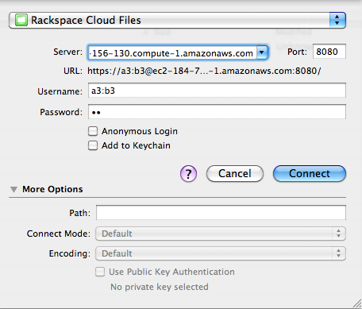

Note
Put together by Caleb Tennis, thanks Caleb!
Install Swift, or have credentials for an existing Swift installation. If you plan to install Swift on your own server, follow the general guidelines in the section following this one. (This documentation assumes the use of the DevAuth auth server; if you’re using Swauth, you should change all auth URLs /v1.0 to /auth/v1.0)
Verify you can connect using the standard Swift Tool st from your “public” URL (yes I know this resolves privately inside EC2):
ubuntu@domU-12-31-39-03-CD-06:/home/swift/swift/bin$ st -A https://ec2-184-72-156-130.compute-1.amazonaws.com:11000/v1.0 -U a3:b3 -K c3 stat
Account: 06228ccf-6d0a-4395-889e-e971e8de8781
Containers: 0
Objects: 0
Bytes: 0
Note
The Swift Tool st can be copied from Swift sources to most any machine with Python installed. You can grab it from http://bazaar.launchpad.net/%7Ehudson-openstack/swift/trunk/annotate/head%3A/bin/st if you don’t have the Swift code handy.
Download and extract the Cyberduck sources (3.5.1 as of this writing). They should be available at http://trac.cyberduck.ch/
Edit the Cyberduck source. Look for lib/cloudfiles.properties, and edit this file. Change auth_url to your public auth URL (note the https):
auth_url=https://ec2-184-72-156-130.compute-1.amazonaws.com:11000/v1.0
Edit source/ch/cyberduck/core/Protocol.java. Look for the line saying “storage.clouddrive.com”. Just above that, change:
public boolean isHostnameConfigurable() {
return true;
}
In the root directory, run “make” to rebuild Cyberduck. When done, type: open build/Release/Cyberduck.app/ to start the program.
Go to “Open Connection”, select Rackspace Cloud Files, and connect.
If you get SSL errors, make sure your auth and proxy server are both setup for SSL. If you get certificate errors (specifically, ‘unable to find valid certification path to requested target’), you are using a self signed certificate, you need to perform a few more steps:
Note
For some folks, just telling the OS to trust the cert works fine, for others use the following steps.
As outlined here: http://blogs.sun.com/andreas/entry/no_more_unable_to_find, download http://blogs.sun.com/andreas/resource/InstallCert.java, run “javac InstallCert.java” to compile it, then run “java InstallCert https://your-auth-server-url:8080“. This script will pull down that certificate and put it into a Java cert store, in your local directory. The file is jssecacerts.
You need to move that file to $JAVA_HOME/jre/lib/security, so your java run time picks it up.
Restart Cyberduck, and it should now allow you to use that certificate without an error.
Both the proxy and auth servers will ultimately need to be running with SSL. You will need a key and certificate to do this, self signed is ok (but a little more work getting Cyberduck to accept it). Put these in /etc/swift/cert.crt and /etc/swift/cert.key.
Note
Creating a self-signed cert can usually be done with:
cd /etc/swift
openssl req -new -x509 -nodes -out cert.crt -keyout cert.key
Example proxy-server config:
[DEFAULT]
cert_file = /etc/swift/cert.crt
key_file = /etc/swift/cert.key
[pipeline:main]
pipeline = healthcheck cache auth proxy-server
[app:proxy-server]
use = egg:swift#proxy
[filter:auth]
use = egg:swift#auth
ssl = true
[filter:healthcheck]
use = egg:swift#healthcheck
[filter:cache]
use = egg:swift#memcache
Example auth-server config:
[DEFAULT]
cert_file = /etc/swift/cert.crt
key_file = /etc/swift/cert.key
[pipeline:main]
pipeline = auth-server
[app:auth-server]
use = egg:swift#auth
super_admin_key = devauth
default_cluster_url = https://ec2-184-72-156-130.compute-1.amazonaws.com:8080/v1
Use swift-auth-add-user to create a new account and admin user:
ubuntu@domU-12-31-39-03-CD-06:/home/swift/swift/bin$ swift-auth-add-user -K devauth -a a3 b3 c3
https://ec2-184-72-156-130.compute-1.amazonaws.com:8080/v1/06228ccf-6d0a-4395-889e-e971e8de8781
Note
It’s important that the URL that is given back to you be accessible publicly. This URL is tied to this account, and will be served back to Cyberduck after authorization. If this URL gives back something like: http://127.0.0.1/v1/... this won’t work, because Cyberduck will attempt to connect to 127.0.0.1.
This URL is specified in the auth-server config’s default_cluster_url. However, once you have created an account/user, this URL is fixed and won’t change even if you change that configuration item. You will have to use sqlite to manually edit the auth.db in order to change it (limitation of using the development auth server, but perhaps someone will patch in this ability someday).
Verify you can connect using the standard Swift Tool st:
ubuntu@domU-12-31-39-03-CD-06:/home/swift/swift/bin$ st -A https://127.0.0.1:11000/v1.0 -U a3:b3 -K c3 stat
Account: 06228ccf-6d0a-4395-889e-e971e8de8781
Containers: 0
Objects: 0
Bytes: 0
Note
Please let me know if you find any changes that need to be made: ctennis on IRC